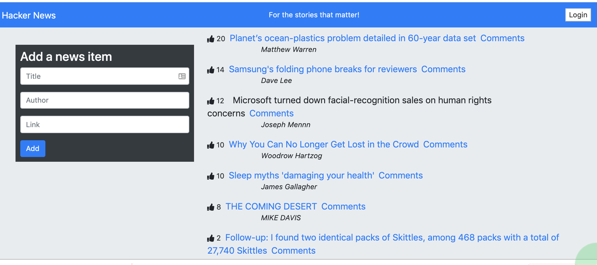
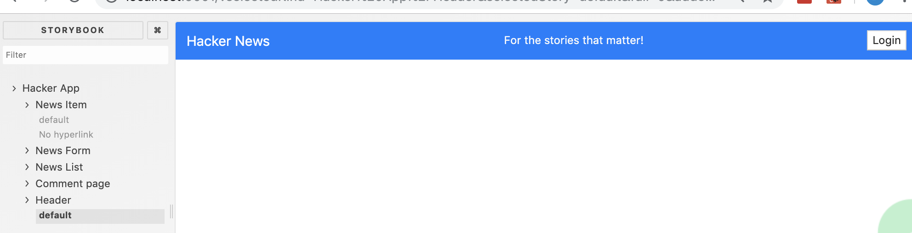
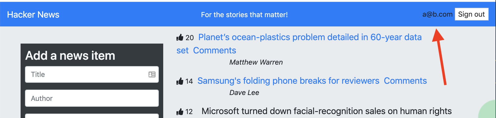
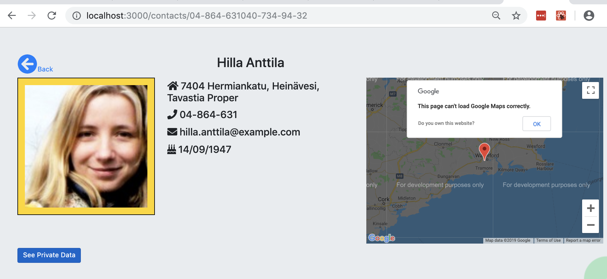

Finishing touches.
In this lab we add some final features to the two lab apps. For the Hacker news app we stitch in authentication so that only logged-in users can add comments to a news item. For the Contacts app a Google Map is added to a contact's detail view.
Hacker News App.
We will add authentication to this app so that the Comments view is protected. Authentication will be based on JWT web tokens. A mock authentication server will provide the necessary backend to test the functionality of the client-side.
The app header be changed to look as follows:

Authentication.
aFrom twoApps/hackerNews, dd the axios module to the project:
$ npm install --save axios@0.18.0We will encapsulate the authentication logic in a separate utility class. Create the file hackerNews/src/util/authentication.js and copy this code:
import axios from "axios";
class Authentication {
constructor() {
this.isAuthenticated = false
this.token = undefined
this.username = undefined
this.error = undefined
}
authenticate(username, password, cb, errorcb) {
axios
.post("http://localhost:8085/auth", {
identifier: username,
password: password
})
.then(res => {
this.isAuthenticated = true;
this.token = res.data.token;
this.username = username;
this.error = undefined;
cb();
})
.catch(err => {
this.error = err.response.status;
errorcb();
});
}
signout(cb) {
this.isAuthenticated = false;
this.username = undefined;
this.tolen = undefined;
this.error = undefined;
cb();
}
}
export default new Authentication();The authenticate method above makes a HTTP POST request to our mock authentication server (see later). If the user is authenticated, it stores their username and token locally until the user logs out (the signout method). The app does not actually use the token subsequently as the server does not provide a RESTful service in our case.
Create the file hackerNews/src/components/authentication/authButton.js and paste in the following:
import Authentication from "../../util/authentication";
import React, { Fragment } from "react";
import { withRouter } from "react-router-dom";
const AuthButton = props => {
const { history } = props;
return Authentication.isAuthenticated ? (
<Fragment>
{`${Authentication.username} `}
<button
onClick={() => {
Authentication.signout(() => history.push("/"));
}}
>
Sign out
</button>
</Fragment>
) : (
<button
onClick={() => {
history.push("/login");
}}
>
Login
</button>
);
};
export default withRouter(AuthButton);This component will either display a Login button or a Signout button depending on the user's authentication status. The Signout button onClick handler calls the utility signout() method with a callback function that forces a redirection to the home page. The Login button onClick handler simply programmatically navigates to the Login page.
Create the file src/components/header/index.js and paste in the following:
import React from "react";
import { Link } from "react-router-dom";
import AuthButton from "../authentication/authButton";
const Header = () => (
<nav className="navbar navbar-light fixed-top bg-primary ">
<Link className="navbar-brand text-white" to="/">
Hacker News
</Link>
<span className="navbar-text text-light">For the stories that matter!</span>
<ul className="navbar-nav">
<li className="nav-item">
<AuthButton />
</li>
</ul>
</nav>
);
export default Header;Add a story to stories/index.js for the Header component:
..... other imports ......
import Header from "../src/components/header/";
import { MemoryRouter } from "react-router";
..... other stories ......
storiesOf("Hacker App/Header", module)
.addDecorator(story => (
<MemoryRouter initialEntries={["/"]}>{story()}</MemoryRouter>
))
.add("default", () => <Header />);Start the storybook server and test the Header component:

Bug Fix.
In stories/index.js the NewsItam and NewsList stories must be decorated with MemoryRouter due to their use of the Link component.
storiesOf("Hacker App/News Item", module)
.addDecorator(story => (
<MemoryRouter initialEntries={["/"]}>{story()}</MemoryRouter>
))
.add("default", () => {
.............
}
storiesOf("Hacker App/News List", module)
.addDecorator(story => (
<MemoryRouter initialEntries={["/"]}>{story()}</MemoryRouter>
))
.add("default", () => {
..........
}Create the file src/components/authentication/loginForm.js and paste in the following:
import React, { Component } from "react";
import Authentication from "../../util/authentication";
import { withRouter, Redirect } from "react-router-dom";
class Login extends Component {
state = {
redirectToReferrer: false,
username: "",
password: ""
};
handleChange = e => {
this.setState({ [e.target.name]: e.target.value });
};
onSubmit = e => {
e.preventDefault();
Authentication.authenticate(this.state.username, this.state.password,
() => {
this.setState({ redirectToReferrer: true , username: '', password: ''});
},
() => {
this.setState({ redirectToReferrer: false, password: ''});
}
);
};
render() {
const { redirectToReferrer } = this.state;
const { from } = this.props.location.state || { from: { pathname: "/" } };
if (redirectToReferrer === true) {
return <Redirect to={from} />;
}
return (
<div className="row">
<div className="col-md-4 offset-3">
{Authentication.error === 401 ? <p>Invalid username/password</p> : <p></p>}
<form style={{ marginTop: "30px" }}>
<h3>Login</h3>
<div className="form-group">
<input
type="text"
className="form-control"
placeholder="Username"
name="username"
value={this.state.username}
onChange={this.handleChange}
/>
</div>
<div className="form-group">
<input
type="password"
className="form-control"
placeholder="Password"
name="password"
value={this.state.password}
onChange={this.handleChange}
/>
</div>
<button
type="submit"
className="btn btn-primary"
onClick={this.onSubmit}
>
Submit
</button>
</form>
</div>
</div>
);
}
}
export default withRouter(Login);Although a 'standard' login form, the code has a number of features:
- The onSubmit method calls the utility authenticate method with two callback: the first is for a successful authentication and the second is when authentication fails.
- The redirectToReferrer and from variable control where the app redirects to after a successful login:
- To the home page if the user navigated to the Login page by clicking the Login button.
- To the protected page the user tried to access before being redirected to the Login page.
- CSS can be inlined in JSX using the style attribute, e.g. style={{ marginTop: "30px" }}. Their are subtle syntax differences between pure CSS and this inlined style.
Add a story to stories/index.js for this component:
..... other imports ......
import LoginForm from "../src/components/authentication/loginForm";
..... other stories ......
storiesOf("Hacker App/Login Form", module)
.addDecorator(story => (
<MemoryRouter initialEntries={["/"]}>{story()}</MemoryRouter>
))
.add("default", () => (
<LoginForm />
));Check the component in Storybook.
To integrate these components into the app, update src/index.js as follows:
...... other imports .......
import Header from "./components/header/";
import LoginForm from "./components/authentication/loginForm";
const Router = () =>
<BrowserRouter>
<div className="jumbotron">
<Header />
<div className="container-fluid">
<Switch>
<Route path="/posts/:post_id" component={CommentPage} />
<Route path="/login" component={LoginForm} /> {/* New route */}
<Route exact path="/" component={App} />
<Redirect from="*" to="/" />
</Switch>
</div>
</div>
</BrowserRouter>
ReactDOM.render(<Router />, document.getElementById("root"));To exercise the login functionality we will use a mock JWT-based authentication backend. Create a new folder mockJwt somewhere AWAY FROM the twoApps folder and from their type the following command:
$ git clone https://github.com/alex-c/mock-auth-backendIn mockJwt/mock-auth-backend/config/defaults.json, change the line:
"cors-origin": "http://localhost:8080",to:
"cors-origin": "*",This allow requests to the server to come from all (*) other origins, not just localhost:8080. The mock auth server has two default accounts configured in mockJwt/mock-auth-backend/accounts.json - modify them or add others if you wish.
Go to mockJwt/mock-auth-backend and start the server:
$ node index.jsOpen a second terminal at twoApps/hackerNews and start the CRA development server (npm start). In the browser, click the login button and login as:
Username: a@b.com
Password: test
The main view now indicates the user is logged-in.

Click the Sign Out button before continuing.
We should add some Cypress tests for this functionality. Create the file hackerNews/cypress/integration/authentication.spec.js and paste in this code:
describe("User Authentication", () => {in the following
beforeEach(() => {
cy.visit("/");
});
it("Logs in a valid user", () => {
cy.get("button")
.contains("Login")
.click();
cy.url().should("include", "/login");
cy.get("input[name=username]")
.clear()
.type("a@b.com");
cy.get("input[name=password]")
.clear()
.type("test");
cy.get("button[type=submit]").click();
cy.url().should("not.include", "/login");
cy.get("nav")
.find("ul")
.contains("a@b.com");
cy.get("nav")
.find("ul")
.find("button")
.contains("Sign out");
});
it("Rejects an invalid user", () => {
cy.get("button")
.contains("Login")
.click();
cy.get("input[name=username]")
.clear()
.type("invalid@b.com");
cy.get("input[name=password]")
.clear()
.type("test");
cy.get("button[type=submit]").click();
cy.url().should("include", "/login");
cy.get("p").contains("Invalid username/password");
});
it("Logs out a user successfully", () => {
cy.get("button")
.contains("Login")
.click();
cy.url().should("include", "/login");
cy.get("input[name=username]")
.clear()
.type("a@b.com");
cy.get("input[name=password]")
.clear()
.type("test");
cy.get("button[type=submit]").click();
cy.url().should("not.include", "/login");
cy.get("nav")
.find("ul")
.find("button")
.contains("Sign out")
.click();
cy.get("nav")
.find("ul")
.find("button")
.contains("Login");
cy.get("nav")
.find("ul")
.contains("a@b.com")
.should("not.exist");
});
});Assuming both the mock authentication server and CRA development server are still running, open another terminal window and start Cypress.
$ npx cypress openIn the Cypress GUI, click authentication.spec.js to run the tests. Clicking the Stop button to terminate test execution.

Go to the twoApps/hackerNews folder and commit this work:
$ git add -A
$ git commit -m "Added authentication and related tests"Protected routes.
We now want to protect the Comments view from unauthenticated users. Create src/components/authentication/privateRoute.js and add the following:
import React from "react";
import { Route, Redirect } from "react-router-dom";
import Authentication from "../../util/authenticate";
const PrivateRoute = props => {
const { component: Component, ...rest } = props;
return (
<Route
{...rest}
render={props => {
return Authentication.isAuthenticated === true ? (
<Component {...props} />
) : (
<Redirect
to={{
pathname: "/login",
state: { from: props.location }
}}
/>
);
}}
/>
);
};
export default PrivateRoute;This component expects a component name prop and possibly others (rest). It uses the current user's authentication status to either renders the component passed to it or it redirects to the login page. To use the PrivateRoute component, in src/index.js change the line:
<Route path="/posts/:post_id" component={CommentPage} />to
<PrivateRoute path="/posts/:post_id" component={CommentPage} />and add the import:
import PrivateRoute from "./components/authentication/privateRoute";Assuming:
- The CRA and mock auth servers are running, and
- A user is not logged in.
In the browser click the Comments link for any news item. You should be redirected to login. Use the same user credentials as earlier and the app will redirect you to the chosen Comment view. Return to the main view and click another Comment link. This time you are taken directly to the view.
We will again add tests to ensure this functionality is not broken in future adaptive/corrective maintenance. In cypress/integration/main-view.js make the following addition:
describe("Main View ", () => {
........
describe("Add news item", () => {
......
}
describe.only("Navigate to Comment page", () => {
it("requires a login before showing protected page", () => {
cy.get("span.newsitem")
.eq(1)
.contains("Comment")
.click();
cy.url().should("include", "/login");
cy.get("input[name=username]")
.clear()
.type("a@b.com");
cy.get("input[name=password]")
.clear()
.type("test");
cy.get("button[type=submit]").click();
cy.url().should("include", "/posts/2");
cy.get("a").contains("Samsung's folding phone");
});
it("shows protected page when user already logged-in", () => {
cy.get("button")
.contains("Login")
.click();
cy.get("input[name=username]")
.clear()
.type("a@b.com");
cy.get("input[name=password]")
.clear()
.type("test");
cy.get("button[type=submit]").click();
cy.get("span.newsitem")
.eq(1)
.contains("Comment")
.click();
cy.url().should("include", "/posts/2");
});
});
})Run the tests via the Cypress GUI.
Go to the twoApps/hackerNews folder and commit this work:
$ git add -A
$ git commit -m "Protected comments view"Contact List App.
We want to add Google Map to the contact details page. Ideally the map location should correspond to the person's address, however the longitude and latitude readings provided by the Random User web API are randomly generated and are invalid for mapping purposes. Therefore, we will hard-code it for WIT, Waterford for illustration purposes.
Create a new component file contactList/src/components/map/index.js and paste in the following:
import React from "react";
import { withScriptjs, withGoogleMap, GoogleMap, Marker } from "react-google-maps"
const Map = withScriptjs(withGoogleMap((props) =>
<GoogleMap
defaultZoom={8}
defaultCenter={props.location}
>
{props.isMarkerShown && <Marker position={props.location } />}
</GoogleMap>
))
export default Map;The react-google-map library provides components and uses the higher order component pattern to simplify our integration with the Google Map service - it encapsulates the complicated coding aspects inside these two constructs. The components include GoogleMap and Marker, while HOCs include withScriptjs() and withGoogleMap().
In src/components/contactPublic/index.js make the following changes:
....... other imports .....
import Map from "../map/";
export default ({ user }) => {
const location = {lng:-7.142379, lat: 52.246502} // WIT, Waterford
const name = . . . . .
return ( . . . . . )
}In the same file, replace the JSX excerpt:
<div className="col-5 bg-secondary text-light">
<span>Map placeholder</span>
</div>with the following:
<div className="col-5" >
<Map
isMarkerShown
googleMapURL="https://maps.googleapis.com/maps/api/js?v=3.exp&libraries=geometry,drawing,places"
loadingElement={<div style={{ height: `100%` }} />}
location={location}
containerElement={<div style={{ height: `400px` }} />}
mapElement={<div style={{ height: `100%` }} />}
/>
</div>[The above code is not using a Google Map API key. To use one, change the googleMapURL prop to:
googleMapURL="https://maps.googleapis.com/maps/api/js?key=[... your key ...]&v=3.exp&libraries=geometry,drawing,places"For security reasons the key should not appear directly in your code. Instead use an environment variable and ensure the .env configuration file is not pushed to your GitHub repo
]
Start the CRA server and navigate to any contact's detail page. The map should appear on the right:

Go to the twoApps/contactList folder and commit this work:
$ git add -A
$ git commit -m "Added Google map support"Startup.
The Cypress framework has already been added to both our lab app - see devdependencies section of package.json in either project folder.
Contact List app.
In a terminal window, go to twoApps/contactList and start the Cypress interactive test runner:
$ npx cypress openAs this is the first time running the tool in this project, Cypress scaffolds some content, including cypress.json (for configuration) and a cypress subfolder (for the test code and other artifacts).

Stop the test runner by hitting cntl/c.
In contactList/cypress.json add this entry:
{
"baseUrl": "http://localhost:3000/"
}This tells Cypress where our app is being hosted.
Optional: In contactList/cypress/integration delete the examples folder - it contains sample test specs which can be useful when learning the Cypress API.
Hacker News app.
In twoApps/hackerNews repeat the above steps - we will use it later.